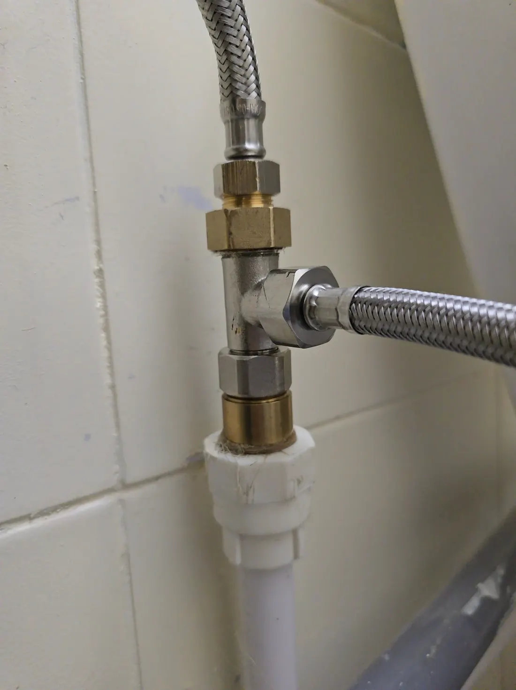
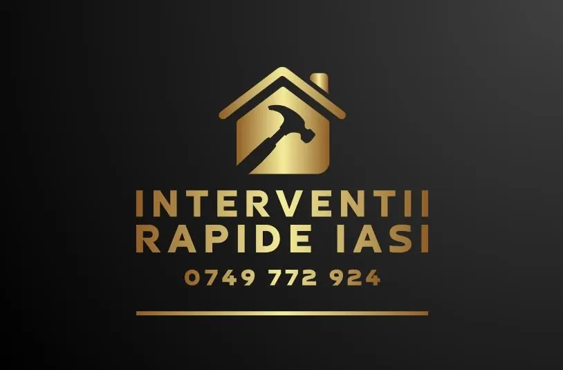

{{Intervenții|Rapid|Intervenções}}{{Rapide|Response|Rápidas}}{{Instalator · Iași · 24 de ore|Plumber · Iași · 24 hours|Canalizador · Iași · 24 horas}}
{{Țeavă spartă, scurgere înfundată, robinet care nu se mai oprește. Sunați și spuneți ce s-a întâmplat — sau trimiteți poze, cu zona, și vă răspundem.|A burst pipe, a blocked drain, a tap that won’t stop. Call and tell us what happened — or send photos with your area and we’ll get back to you.|Cano rebentado, esgoto entupido, torneira que não para. Ligue e diga o que aconteceu — ou envie fotos com a zona e respondemos.}}
{{Alegeți problema. Restul îl scrie site-ul.|Pick the problem. The site writes the rest.|Escolha o problema. O site escreve o resto.}}
{{Fiecare buton deschide cererea cu problema deja aleasă. Adăugați zona și poze, apoi trimiteți pe WhatsApp sau prin SMS.|Each button opens the request with the problem already chosen. Add your area and photos, then send on WhatsApp or by SMS.|Cada botão abre o pedido com o problema já escolhido. Junte a zona e fotos, e envie por WhatsApp ou SMS.}}

{{Strâns bine, să nu mai picure.|Tightened so it stops dripping.|Bem apertado, para não pingar mais.}}
- 1{{Furtun flexibil din inox împletit, sus și în lateral.|Braided stainless hose, above and to the side.|Tubo flexível de inox entrançado, em cima e de lado.}}
- 2{{Teu nichelat cu piulițe din alamă — două ieșiri dintr-o singură țeavă.|Nickel-plated tee with brass nuts — two outlets from one pipe.|Tê niquelado com porcas de latão — duas saídas de um só tubo.}}
- 3{{Legătura pe țeava albă, cu cânepă pe filet.|Joined to the white pipe, hemp on the thread.|Ligação ao tubo branco, com cânhamo na rosca.}}
{{Trei pași, de la telefon la țeava reparată.|Three steps, from the call to the fixed pipe.|Três passos, da chamada ao cano reparado.}}
- 01
{{Sunați sau scrieți|Call or write|Ligue ou escreva}}
{{Spuneți ce curge, unde și de când. O poză spune mai mult decât trei minute la telefon.|Say what’s leaking, where and since when. A photo says more than three minutes on the phone.|Diga o que pinga, onde e desde quando. Uma foto diz mais do que três minutos ao telefone.}}
- 02
{{Stabilim ora|We agree the time|Combinamos a hora}}
{{Vă spunem când putem ajunge în zona dumneavoastră. Până atunci: robinetul general închis.|We tell you when we can reach your area. Until then: main valve off.|Dizemos-lhe quando podemos chegar à sua zona. Até lá: torneira geral fechada.}}
- 03
{{Intervenția|The job|A intervenção}}
{{Reparăm la fața locului. Prețul și garanția: de confirmat|We fix it on the spot. Price and guarantee: to be confirmed|Reparamos no local. Preço e garantia: a confirmar}}
{{Închideți întâi robinetul general. Apoi sunați. Dacă nu știți unde e robinetul, pagina «Până venim» vă arată unde să căutați.|Turn off the main valve first. Then call. If you don’t know where it is, the “Before we arrive” page shows where to look.|Feche primeiro a torneira geral. Depois ligue. Se não sabe onde está, a página «Até chegarmos» mostra onde procurar.}}
{{Ce, unde, cât de urgent.|What, where, how urgent.|O quê, onde, que urgência.}}
{{Trei alegeri și, dacă puteți, poze. Mesajul se scrie singur; picătura din dreapta se oprește când e gata de trimis. Dacă apa curge chiar acum, sunați — e mai repede.|Three choices and, if you can, photos. The message writes itself; the drip stops when it’s ready to send. If water is running right now, call — it’s faster.|Três escolhas e, se puder, fotos. A mensagem escreve-se sozinha; a gota para quando estiver pronta a enviar. Se a água está a correr agora, ligue — é mais rápido.}}
{{Apă unde nu trebuie.|Water where it shouldn’t be.|Água onde não devia.}}
{{Problemele cu care ne sună oamenii, ce puteți face în primele minute și ce să ne spuneți. Lista exactă de lucrări și prețurile se confirmă la telefon.|The problems people call us about, what to do in the first minutes and what to tell us. The exact list of jobs and prices is confirmed on the phone.|Os problemas por que nos ligam, o que fazer nos primeiros minutos e o que nos dizer. A lista exata de trabalhos e preços confirma-se ao telefone.}}
{{Primele cinci minute.|The first five minutes.|Os primeiros cinco minutos.}}
{{Ce puteți face singur, în siguranță, cât timp așteptați instalatorul. Nimic din ce e aici nu cere scule.|What you can safely do yourself while you wait for the plumber. Nothing here needs tools.|O que pode fazer sozinho, em segurança, enquanto espera pelo canalizador. Nada aqui precisa de ferramentas.}}
{{Miroase a gaz?|Smell gas?|Cheira a gás?}}
- {{Nu aprindeți lumina și nu folosiți brichete sau aparate electrice.|Don’t switch on lights or use lighters or electrical appliances.|Não acenda luzes nem use isqueiros ou aparelhos elétricos.}}
- {{Deschideți geamurile și ieșiți din casă.|Open the windows and leave the home.|Abra as janelas e saia de casa.}}
- {{De afară, sunați la 112.|From outside, call 112.|Lá fora, ligue para o 112.}}
0749 772 924
{{Intervenții Rapide Iași, instalator, pe Strada Frumoasă. Sunați sau trimiteți mesaj cu problema și zona.|Intervenții Rapide Iași, plumber, on Strada Frumoasă. Call or send a message with the problem and your area.|Intervenții Rapide Iași, canalizador, na Strada Frumoasă. Ligue ou envie mensagem com o problema e a zona.}}

- 0749 772 924
- Str. Frumoasă, 700729 Iași, România
- {{5,0 pe Google · 29 de recenzii|5.0 on Google · 29 reviews|5,0 no Google · 29 avaliações}}
- {{Zonele unde venim și costul deplasării: de confirmat|Areas covered and call-out cost: to be confirmed|Zonas onde vamos e custo da deslocação: a confirmar}}